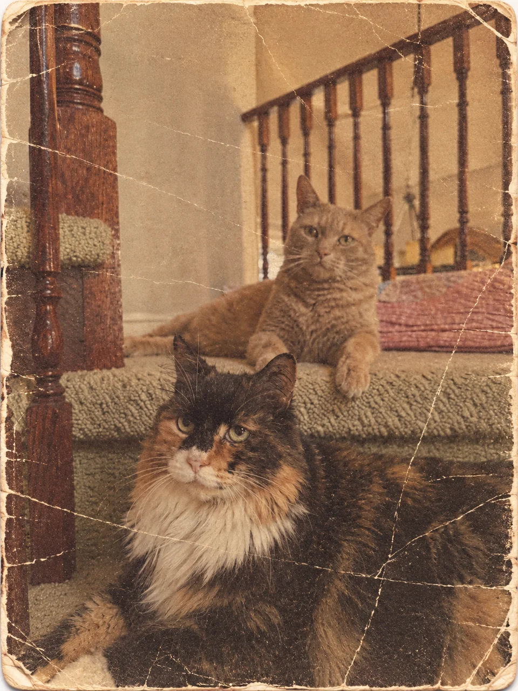
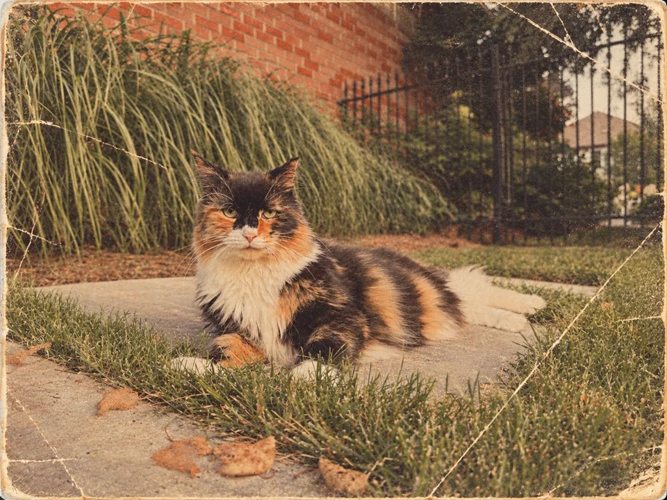
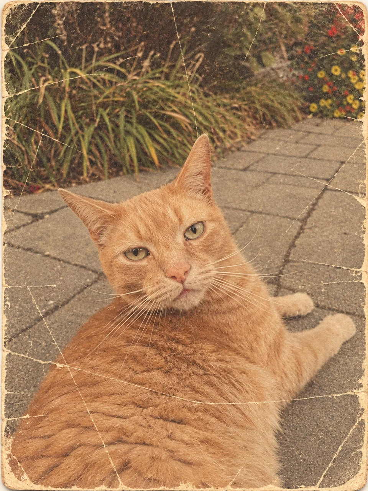

A household record
Pets
A register of the animals who have shared a roof with Mr. Smithers. More entries are coming.

-

Larry
Cat, calico
2014 to present
Role in the household Ranking feline, under a name that still requires a footnote.
Her name is Larry. She is a calico, and a she, and has been in the house since 2014. Visitors are asked to recover from this information on their own time. A fuller account will be written when the exact dates, and any other facts worth setting down, have been confirmed.
-
In memoriam

Freddy (Mr. Fred)
Cat, ginger tabby
2019 to 2026
Role in the household A beloved member of the household.
Freddy, also called Fred, was a ginger tabby who lived here from 2019 to 2026. He was loved very much. Rest easy, Fred. Loved more than he ever let on he knew.
Further entries will be added as the photographs arrive.